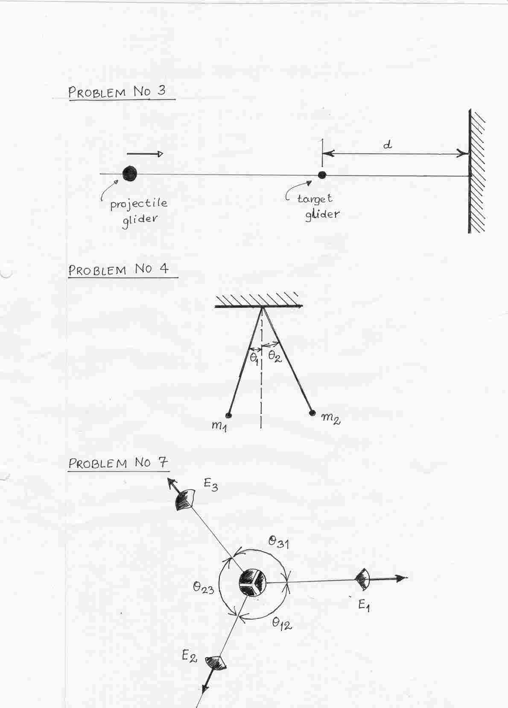

Local archive · diagram review
Physics diagrams: what survives
Calendar and physics readings · Physics navigation
Four original diagram sheets are gathered here for easier reading. All were already preserved in the collection. This stage adds a guide and source relationships; it does not claim newly recovered image files.
Figures still missing · Other saved pages and version notes
Chain, latitude and sand hopper
SevenP.htm directly names this JPEG. The dated sevenprob_lastweek.htm uses a different path and extension; an earlier pass linked it to this same-subject sheet as a documented inference.

Saved Seven Problems page · Saved 25–31 December 2000 version
Springs and blocks
The worksheet names sevenp3_files/phy3.jpe. The surviving same-folder phy3.jpe matches the numbered spring problems; its path was reconnected in an earlier pass. Original served-byte identity remains unverified.
Two liquids in a circular tube
The saved sevenp7.htm directly names this JPEG beside the corresponding fluid-mechanics problem. It also accompanies the separate Word reading as a related website image.

Saved fluid-mechanics website worksheet · Fluid-mechanics Word reading
Unmatched mechanics sheet
This JPEG survives in the physics folder, but sevenp9.htm contains magnetism questions. No matching worksheet body was identified in the saved physics HTML. The shared filename number is insufficient to attach this sheet to that page. It remains an unassigned source image.


Figures still missing
Electrostatics Word reading: Problems 4 and 5 refer to figures for separated hemispheres and a partially removed spherical shell. No figure was recovered from the Word conversions or the corresponding saved HTML.
Seven P 12: three image files are named in both the saved HTML and its FrontPage link record. They were not found in the indexed local collection:
images/sevenp121.png— Problem 4, capacitor with two dielectrics.images/sevenp122.png— Problem 5, network of identical capacitors.images/sevenp123.jpg— Problem 6, spring-supported capacitor plate and dielectric slab.
The archive-wide filename search and review of 34 images near the recorded display dimensions found no match. Display dimensions need not equal original image dimensions, so this is a bounded search, not proof that every possible differently named image has been excluded. No replacement figures have been drawn.
Other saved pages and version notes
- IIT full-length paper retains ten question JPEGs. The saved HTML does not name a phyp1q2.jpg file; the numbering gap alone does not establish a lost image.
- sevenp9.htm contains magnetism questions. It is distinct from the unassigned mechanics JPEG shown above.
- sevenp10.htm and sevenp11.htm both print “Serial No. 11” and “14/03/2001”, with the same seven gravitation questions. The former has the title “SEVEN P’s 9”. File numbers are not reliable issue dates or proof of distinct worksheets; both saved versions remain available.
Remaining attachment searches found no exact indexed match for chat_source.txt, chat.exe, the MyCalnet Shri_Jagannath_Sthapana_6March2008.ppt or duradrusti-aug03.doc. The August 2003 magazine remains available as a preserved PDF elsewhere in the collection. The saved bird.exe is an executable, not a static reading, and remains outside the browsing edition. Other internal drafts and personal records were not added.
Source notes
All four image sheets and the compared HTML are from MyCommunity/nandighosha.org.zip!/Jee/Physics/. Captions are new descriptive aids, not historical captions or mathematical solutions. The source images remain byte-for-byte unchanged.
The three Word worksheets were converted locally with untrusted macros disabled. The resulting copies contain no exported media or drawing objects. Their original compound-file directories also contain no separately named Data or ObjectPool stream/storage. These checks did not recover a figure; they are not a forensic guarantee about unallocated or uninterpreted document bytes.
The inventory covers 8,254 archive entries, including nested ZIP members; 3,913 image entries were inspected, of which 3,888 opened for dimension checks. None of the 34 near-dimension candidates visually matched the missing capacitor figures. This guide preserves uncertainty rather than substituting an unrelated illustration.